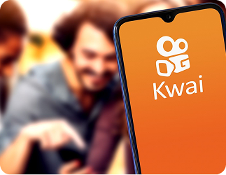
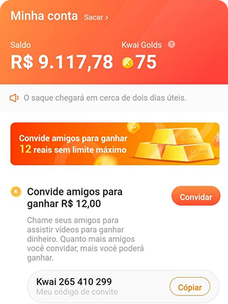
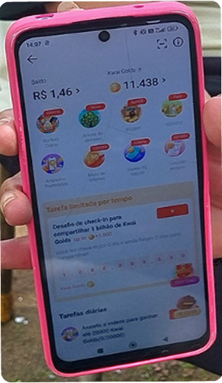

Por uma outra globalização:
Por uma outra globalização
Inspirada pelas reflexões propostas por Milton Santos em Por uma Outra Globalização, a turma INFONET-1V (2º ano) desenvolve uma crítica às redes sociais contemporâneas, como o Kwai, evidenciando como essas plataformas contribuem para o aprofundamento das desigualdades sociais, a disseminação de discursos de ódio e informações falsas, a manutenção de mecanismos de exclusão no contexto da globalização.
O Kwai
A ascensão do Kwai revela os efeitos da globalização digital: embora tenha popularizado os vídeos curtos e dado espaço a criadores, também expõe problemas como a baixa qualidade do conteúdo, relações digitais superficiais e a exploração da atenção como moeda, seguindo a lógica do capitalismo de plataforma.

Falhas na filtragem
O Kwai lucra com aquilo que deveria combater. Embora afirme ter políticas contra desinformação, a plataforma falha ao permitir que conteúdos falsos, perfis manipuladores e vídeos sensacionalistas que se espalham com facilidade. Essa falta de filtragem eficaz mostra que o engajamento parece valer mais do que a responsabilidade com a verdade.
Sistema de Recompensas e Exploração
Role para o lado na imagem para ver mais.


O kwai gold transforma atenção em moeda, e o pensamento crítico em perda. Enquanto usuários assistem por recompensas, a plataforma lucra com o tempo e a ingenuidade de milhões. Essa forma de recompensa cria uma ilusão de benefício, mas, na prática, alimenta vício, desinformação e conteúdo vazio. O que parece um prêmio é, na verdade, uma armadilha disfarçada de diversão.
Fake News e clonagem de contas
Segundo o site O Globo, a desinformação no Kwai tem se tornado uma preocupação crescente. O Ministério Público Federal (MPF) investiga possíveis irregularidades na plataforma, como a criação de perfis falsos, a disseminação de notícias falsas e o favorecimento de candidatos políticos. Clique aqui para saber mais

Depoimentos de usuários
A partir do exposto, é possível perceber que essa plataforma de vídeos curtos possui ligação direta com o processo de globalização e, por isso, está repleta de informações falsas, golpes, entre muitos outros. É possível reclamar desses problemas em algumas plataformas.
Encontre abaixo algumas das reclamações mais recorrentes, retiradas do site ReclameAQUI. Clique aqui para saber mais
Usuário anônimo
Impossibilidade de Saque e Inconsistência de Número no Kwai
“Não consigo mais fazer saque, mensagem número de telefone não é consistente com o número vinculado no kwai.”
Usuário anônimo
Renda alterada e diminuída, impossibilitando o saque
“Faz mais de dois meses que eu estou com a minha conta impossibilitada de sacar, recebo sempre a mesma mensagem de falha no saque.”
Usuário anônimo
Propaganda Enganosa
“Fiz uma pesquisa no app, ganhei quase R$600, mas para sacar teria que pagar R$19,90 via Pix… depois pediram mais R$24,00.”
Usuário anônimo
Promoção de jogos de azar ilegais